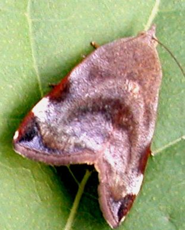

टीक डिफोलिएटरTeak Defoliator
Hyblaea puera · Hyblaeidae · INS-0286

- Scientific name वैज्ञानिक नाम
- Hyblaea puera (Cramer, 1777)
- Family कुल
- Hyblaeidae
- Hindi हिंदी
- टीक डिफोलिएटर
- Local names स्थानीय नाम
- teak defoliator
- Status here यहाँ की स्थिति
- native
- Movement आवागमन
- Resident, here all year
- Known from कहाँ दर्ज
- Others have published records from the wider Awadh–Purvanchal plain, none yet from Basti–Ayodhya अवध–पूर्वांचल से दूसरों के प्रकाशित अभिलेख, बस्ती–अयोध्या से अभी नहीं
- IUCN IUCN
- not evaluated
- Review समीक्षा
- not yet reviewed
When to look कब देखें
Expected mainly in June, July, August, September, October, November. मुख्यतः जून, जुलाई, अगस्त, सितंबर, अक्टूबर, नवंबर में अपेक्षित।
Uses and possibilities उपयोग और संभावनाएँ
Drawn from the documented uses in the profile below, where each is labelled traditional, current or a research lead. All uses →
Tell it apart from इनसे अलग पहचानें
Connections रिश्ते
- feeds on सागवान · Teak
Documented relationships from the profiles; the web grows as profiles are written.
टीक डिफोलिएटर / Teak Defoliator
Hyblaea puera (Cramer, 1777) — Hyblaeidae
टीक डिफोलिएटर — यह सागौन के जंगलों और बागों का एक कुख्यात नाशीकीट पतंग है जिसके अगले पंख भूरे-लाल और पिछले पंख काले होते हैं जिन पर लाल किनारों वाली सुंदर नारंगी पट्टी होती है। इसकी सूंडियां सागौन के पत्तों को मोड़कर अंदर छिपती हैं और कुछ ही दिनों में पूरे पेड़ के पत्तों को चट कर जाती हैं। हालांकि इसके भारी प्रकोप के समय भुजंगा और मैना जैसे पक्षी इन्हें खूब खाते हैं।
Quick Identification त्वरित पहचान
| Feature | Description |
|---|---|
| Forewings | Cryptic greyish red-brown, irrorated with fine dark specks |
| Hindwings | Deep black-brown crossed by a vivid curved orange band edged in scarlet |
| Underside | Bright orange and yellow with contrasting bold black patches |
| Abdomen | Dark black-brown marked with bright orange segmental rings |
| Larval habit | Cuts and folds leaf margins into protective silken feeding shelters |
Stout moth recognized by its cryptic greyish-brown forewings and striking black hindwings marked with a bold curved scarlet-edged orange band.
Field tip: Look in teak plantations during July and August for folded leaf flaps bound with silk; opening the fold reveals the dark purple-grey caterpillar.
हिंदी: भूरे अगले पंखों और नारंगी पट्टी वाले काले पिछले पंखों का पतंगा जिसकी सूंडी सागौन के पत्तों को मोड़कर खाती है।
Morphology आकारिकी
Biometrics as given by Hampson (1894):
| Measurement | Value | Source |
|---|---|---|
| Expanse | 32-40 millim. | Hampson (1894) |
The head is small with porrect rostriform palpi. The antennae are minutely ciliated in males. The thorax is greyish red-brown. The forewing is greyish red-brown, irrorated with dark specks; the costa is arched near the base. The hindwing is deep black-brown, bearing a curved orange band with scarlet edges from upper angle of cell to near anal angle, and a marginal band near anal angle. The underside is orange and yellow with large black spots. Hampson (1894) gives wingspan 32 to 40 mm.
हिंदी: इसके पंखों का फैलाव बत्तीस से चालीस मिलीमीटर होता है (Hampson 1894)। अगले पंख भूरे-लाल होते हैं और पिछले पंखों पर लाल किनारों वाली नारंगी पट्टी होती है। पंखों का निचला हिस्सा पीले-नारंगी रंग का होता है जिस पर काले धब्बे होते हैं।
Behaviour & Ecology व्यवहार और पारिस्थितिकी
Adults are nocturnal and conceal themselves during the day on tree trunks or beneath leafy branches where their cryptic forewings blend against bark. At dusk, they fly swiftly through the tree canopy to mate and feed on sap exudates. The caterpillars are solitary leaf-tiers that cut a semicircular leaf flap, roll or fold it over, secure it with silk strands, and feed on the leaf tissue from within the shelter.
हिंदी: यह रात में उड़ने वाला पतंग है जो दिन में छाल पर छिपता है। इसकी सूंड़ी पत्ते को काटकर मोड़ लेती है और रेशम से चिपकाकर उसके अंदर सुरक्षित रहकर खाती है।
Life Cycle / Phenology जीवन चक्र
Has a rapid life cycle capable of producing up to ten generations per year under tropical warmth. Eggs are laid singly on the undersides of young leaves. The larva passes through five instars in ten to fourteen days, changing from greenish-yellow to dark purple-grey with white longitudinal lines. Pupation occurs inside folded leaves or in surface litter within a loose cocoon. Adults emerge within a week.
हिंदी: गर्मी और बरसात में इसका जीवन चक्र बहुत तेज होता है। दो हफ्तों में सूंड़ी बड़ी होकर मुड़े हुए पत्ते में प्यूपा बन जाती है और एक हफ्ते में पतंगा निकलता है।
Host Plants or Prey आहार
A specialized folivore of Teak (Tectona grandis, family Lamiaceae). It also feeds on other trees in the Bignoniaceae and Verbenaceae families, including Vitex negundo, Callicarpa arborea, and Dolichandrone stipulata.
हिंदी: यह मुख्य रूप से सागौन और संभालू (Vitex negundo) के पत्तों को खाता है।
Predators / Natural Enemies शत्रु
Mass caterpillar outbreaks attract large flocks of insectivorous birds that feast heavily on exposed larvae. Predatory assassin bugs (Reduviidae) and braconid wasps (Apanteles species) provide natural biological control.
हिंदी: जब इसका भारी प्रकोप होता है तो कीटभक्षी पक्षी आकर सूंडियों को चट कर जाते हैं। शिकारी बग भी इनका शिकार करते हैं।
Agricultural / Human Relevance कृषि प्रासंगिकता
A major commercial forestry pest throughout India. Epidemic defoliation during the monsoon stunts timber growth and causes substantial reduction in annual wood increment in young teak plantations. Forest departments promote bird perches, mixed species forestry, and natural biological control rather than chemical spraying in plantations.
हिंदी: यह सागौन की लकड़ी के उत्पादन को नुकसान पहुंचाने वाला प्रमुख कीट है। वन विभाग रसायनों के बजाय मित्र पक्षियों और शिकारी कीड़ों की मदद से इसका नियंत्रण करता है।
Expected Locally स्थानीय रूप से अपेक्षित
Not a field record. Written from published accounts for eastern Uttar Pradesh. No confirmed local sighting yet — if you have seen it, that is what the atlas needs.
अभी तक स्थानीय पुष्टि नहीं। यह विवरण प्रकाशित स्रोतों से है, किसी अवलोकन से नहीं।
Widely distributed in social forestry plantations, farm woodlots, and canal-side teak belts across the middle Gangetic plains. Observers in eastern Uttar Pradesh should check teak trees from July to October for skeletonized leaves and folded flaps.
GBIF holds published records from the wider Awadh–Purvanchal plain, none yet from Basti–Ayodhya.
A first local record for the atlas would be a clear photograph showing diagnostic features, accompanied by date, time, and precise location coordinates sent through the project's About page.
हिंदी: बस्ती और अयोध्या के सागौन के बागों और सड़कों किनारे लगे पेड़ों पर बरसात के समय यह आसानी से मिल सकता है। मुड़े हुए पत्तों या पतंगे की फोटो एटलस को भेजें।
Distribution वितरण
Global range: Pantropical, distributed across tropical Asia, Africa, Australasia, and the Neotropics.
In India: Found across all teak-growing states in peninsular, central, and northern India.
In Uttar Pradesh: Distributed throughout social forestry blocks, forest divisions, and canal plantations.
In Basti district / eastern UP: Documented across rural agroforestry teak plantings based on state forest survey records.
हिंदी: यह दुनिया भर के गर्म देशों और भारत के सभी सागौन उत्पादक राज्यों में पाया जाता है। उत्तर प्रदेश के सभी जिलों में इसका फैलाव है।
Research Questions शोध प्रश्न
- What degree of annual timber increment loss is caused by Hyblaea puera defoliation in Awadh farm forestry blocks?
- How does the presence of bird perches influence predation rates by insectivorous forest birds during outbreak peaks? / क्या खेतों में खूंटे लगाने से शिकारी पक्षी इन सूंडियों को ज्यादा खाते हैं?
- What is the efficacy of native nuclear polyhedrosis virus (HpNPV) in checking larval populations?
- A schoolchild can gently open a folded teak leaf to observe the purple-grey striped caterpillar inside / क्या कोई बच्चा मुड़े हुए सागौन के पत्ते को खोलकर अंदर धारीदार सूंड़ी को देख सकता है?
- How do mixed plantation configurations (teak interplanted with leguminous trees) retard defoliator spread?
हिंदी: क्या मिश्रित पेड़ लगाने से सागौन के इस कीड़े का प्रकोप कम होता है? क्या बच्चे मुड़े पत्तों में सूंड़ी को पहचान सकते हैं?
Similar Species मिलती-जुलती प्रजातियाँ
| Species | How to tell apart | हिंदी | |
|---|---|---|---|
| Rice Leaf Folder \ | Cnaphalocrocis medinalis | Smaller crambid moth whose larvae fold leaves of cereals; lacks orange-and-scarlet hindwing bands | धान का पत्ती लपेटक पतंगा छोटा होता है और घास की पत्तियों को मोड़ता है, उसके पंखों पर लाल-नारंगी पट्टी नहीं होती |
| Hyblaea constellata | Related hyblaeid moth with hindwings marked by isolated yellow spots rather than a continuous curved orange band | इसके पिछले पंखों पर लगातार पट्टी के बजाय अलग-अलग पीले धब्बे होते हैं |
Field rule: Medium-sized brown moth with striking black-brown hindwings bearing a curved scarlet-edged orange band.
हिंदी: अगले पंख भूरे और पिछले पंखों पर लाल किनारे वाली चमकीली नारंगी पट्टी वाला सागौन का प्रसिद्ध पतंगा।
Taxonomy & Classification वर्गीकरण
Original description. Cramer (1777), De Uitlandsche Kapellen, vol. 2, p. 10; described under the basionym Noctua puera.
Subspecies. Considered a monotypic pantropical species.
Family and order placement. Belongs to the teak defoliator moth family Hyblaeidae, order Lepidoptera, class Insecta.
Phylogenetic notes. Designated as the type species of the genus Hyblaea Fabricius.
IUCN status rationale. Not currently evaluated on the IUCN Red List of Threatened Species.
हिंदी: इसे 1777 में पीटर क्रेमर ने Noctua puera नाम से वर्णित किया था। बाद में इसे हाइब्लिडी कुल के Hyblaea जीनस में रखा गया।
Photo Gallery फोटो गैलरी
No photos yet — add field photos to media/species/teak_defoliator/ and run node scripts/sync_photos.js.
Photos needed आवश्यक फोटो
- [ ] Adult moth with wings spread showing orange-banded hindwings (पंख फैलाए पतंगा जिसकी नारंगी पट्टी दिखे)
- [ ] Purple-grey larva inside folded teak leaf shelter (मुड़े हुए पत्ते के अंदर जामुनी-भूरे रंग की सूंड़ी)
- [ ] Defoliated teak tree canopy showing skeletonized leaves (पत्तियों से विहीन सागौन का पेड़)
References संदर्भ
- Original description: Cramer, P. (1777). De Uitlandsche Kapellen voorkomende in de drie waereld-deelen Asia, Africa en America. Vol. 2. S. J. Baalde, Amsterdam, 151 pp. (as Noctua puera).
- Hampson, G. F. (1894). The Fauna of British India, Including Ceylon and Burma: Moths. Vol. 2. Taylor and Francis, London, pp. 371–372.
- Beeson, C. F. C. (1941). The Ecology and Control of the Forest Insects of India and the Neighbouring Countries. Vasant Press, Dehra Dun, 1007 pp.
- GBIF Occurrence Data — Hyblaea puera, India (2025).
Source file: species/fauna/insects/teak_defoliator.md